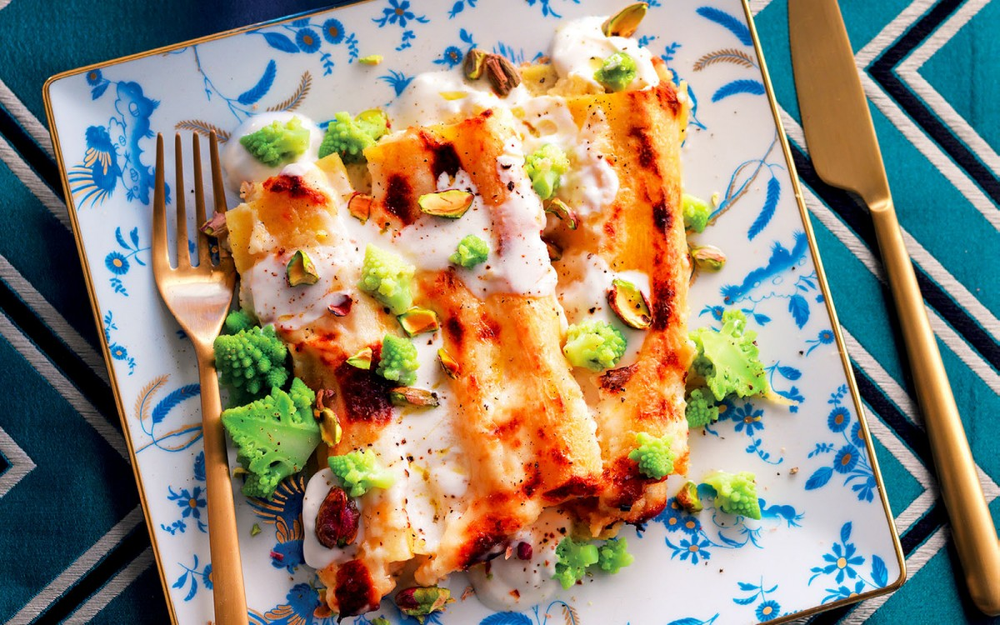

Stuffed Cannelloni with Gorgonzola and Ricotta

Whether enjoyed as a cheese course, tossed with pasta or added to a salad,
Gorgonzola and walnuts are a classic Italian duo. These cannelloni are stuffed with gorgonzola
and ricotta and topped with pistachio nuts.
LIST OF INGREDIENTS
- 2 CUPS of milk
- 14 OZ. of mild gorgonzola
- 9 OZ. of ricotta
- 9 OZ. of Romanesco broccoli florets
- pistachios, shelled and chopped
- 2 TBSP. of unsalted butter
- 2 TBSP. of all-purpose flour
- 16 of dried cannelloni
- 1 of large egg
- nutmeg
- Parmigiano Reggiano PDO, grated
- extra-virgin olive oil
- salt
- pepper
Directions
- Mix the ricotta with the gorgonzola (rind removed), 1 1/2 oz. Parmigiano and the egg.
Season generously with black pepper and a pinch of salt. Mix well and transfer mixture to a pastry bag.
- For the béchamel: Melt the butter in a saucepan, then add the flour and cook for 3-4 minutes. Add the cold milk,
stir and bring to a boil. Cook, stirring constantly, for around 10 minutes; add salt and flavor generously with grated nutmeg.
- For the cannelloni: Cover the bottom of an oven-proof dish large enough to fit 16 cannelloni with 2-3 Tbsp. bechamel.
Pipe the cannelloni with the filling and place them in the oven dish next to each other. Cover with the remaining bechamel
and sprinkle with Parmigiano. Cover with aluminum foil and bake at 375°F for 30 minutes. Then remove the aluminum and
let brown at 390°F for about 10 minutes.
- In the meantime, bring a pot of water to a boil and season it with salt. Add the broccoli florets and cook for 6-8 minutes;
drain and dress with a drizzle of oil. Serve with the cannelloni and top with the chopped pistachios.